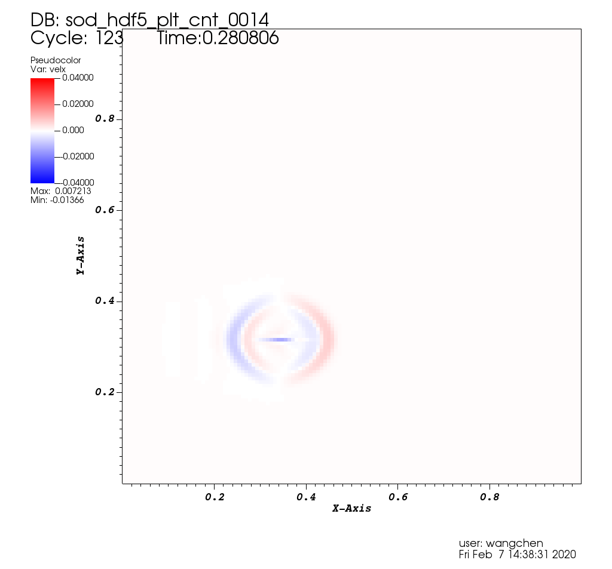
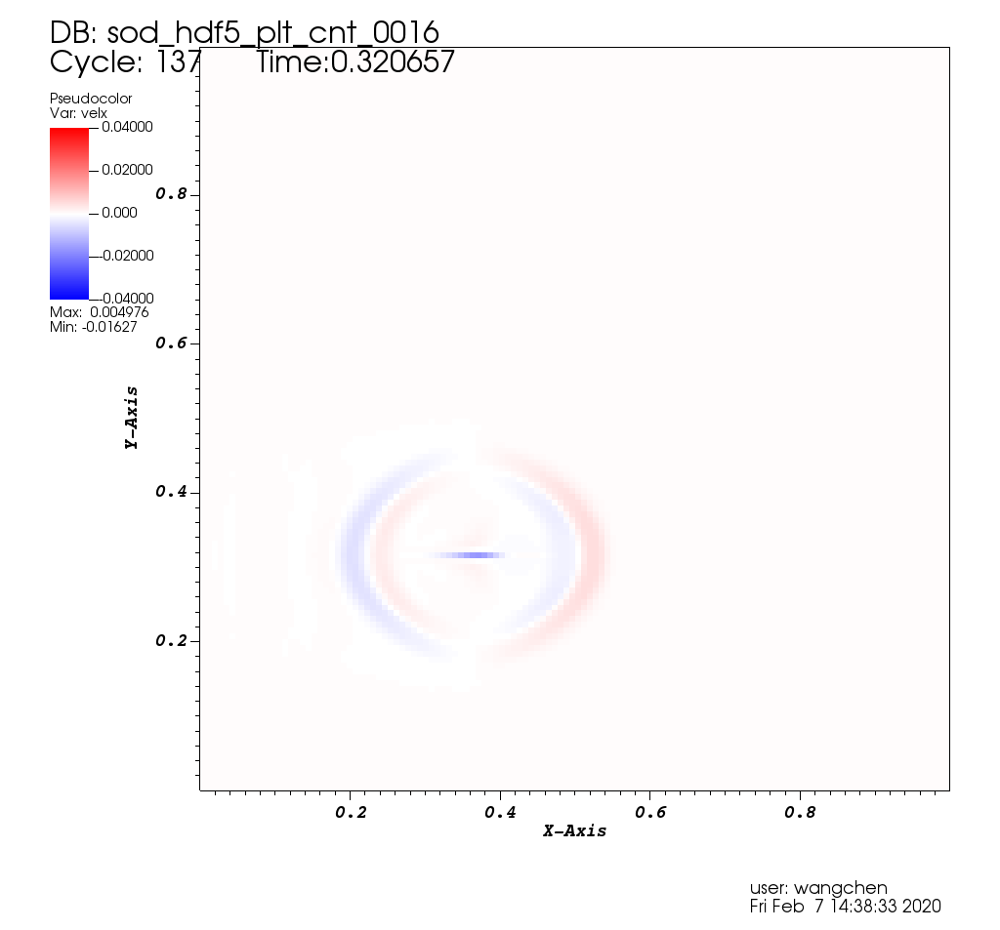
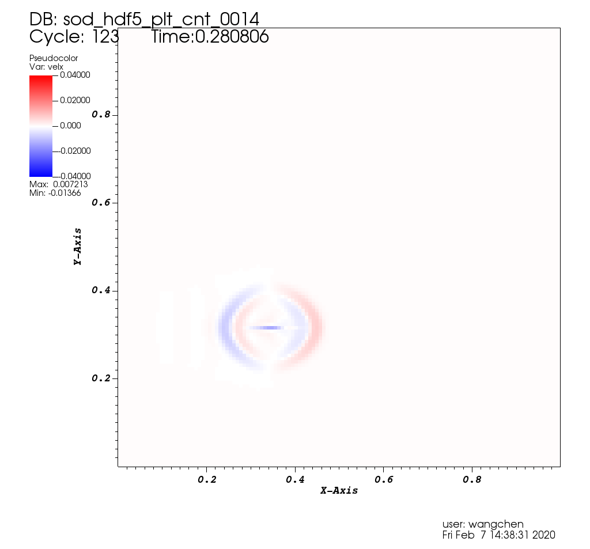
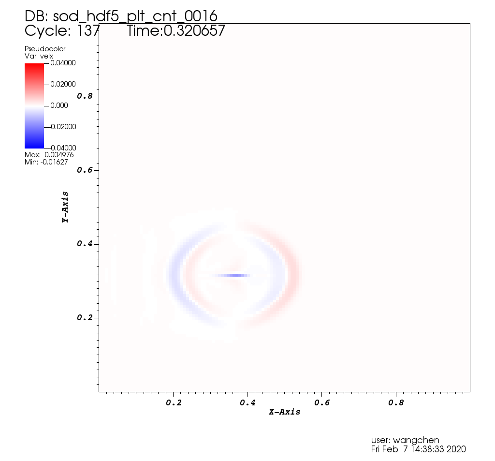

Sod 2D 128x128
Default initial conditions
tmax = 0.4s - total of 164 steps
checkpoint interval time = 0.05s, checkpoints: [0000, 0008]
plotfile interval time = 0.02s, plotfiles: [0000, 0021]
restart from checkpoint 0004 (plotfile 0010)
Introduce error at dens[40,40], original value:0.82, error value:1.5


 


